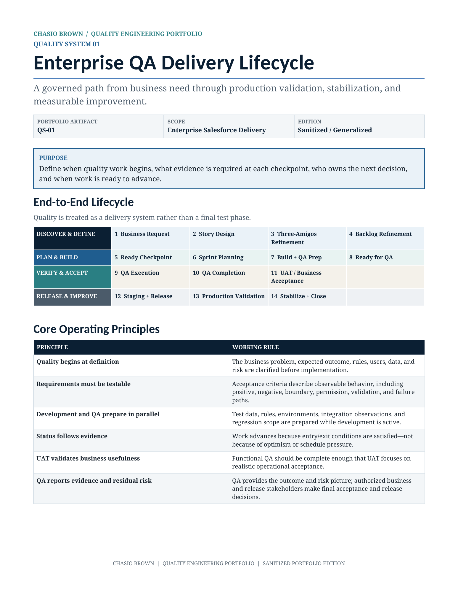

Enterprise QA Delivery Lifecycle
A governed path from business need through QA, UAT, staging, production validation, stabilization, and measurable improvement.

What this demonstrates
- Design of a complete quality operating model rather than test execution in isolation.
- Evidence-based quality gates from story readiness through release readiness.
- Clear decision boundaries across Product, BA, Development, QA, UAT, Release, and Operations.
- Risk-based QA completion language and measurable delivery-health indicators.
Lifecycle design
The model organizes delivery into Discover & Define, Plan & Build, Verify & Accept, and Release & Improve. Each phase has explicit purpose, evidence, ownership, and movement criteria.
Quality checkpoints
Story Ready, Ready for QA, QA Complete, and Release Ready gates prevent incomplete work from moving forward simply because of schedule pressure.
Leadership value
The framework creates a common operating language for product, engineering, QA, UAT, and release stakeholders while preserving decision accountability.
Built to make quality operational.
This is a generalized portfolio adaptation of an enterprise quality operating model. Institutional names, logos, personnel, internal URLs, ticket identifiers, environment names, proprietary fields, and implementation-specific details have been removed or generalized.